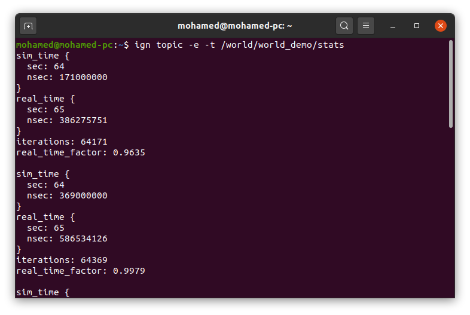
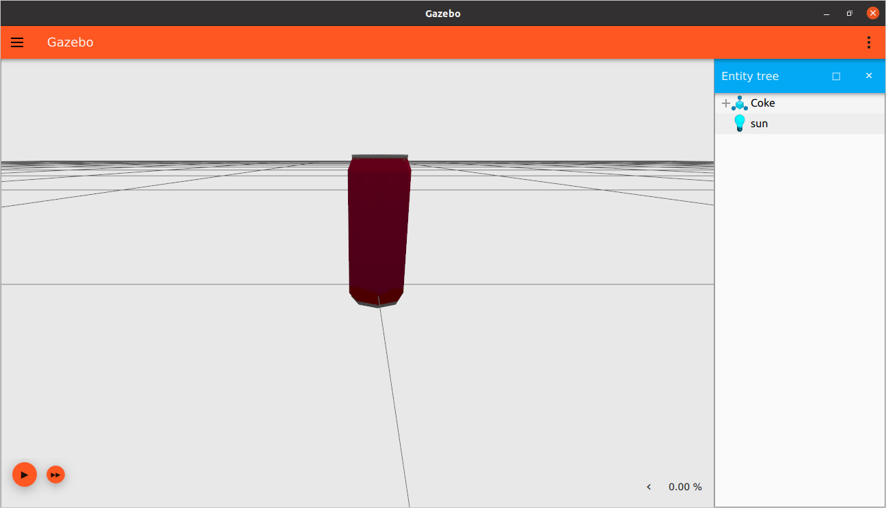

SDF worlds
이 튜토리얼에서는 SDF를 사용하여 월드를 구축하고 모델을 추가하는 방법을 배웁니다. 텍스트 편집기를 열고 이 튜토리얼을 따라 코드를 추가하세요. 이 튜토리얼의 완성된 월드는 여기에서 다운로드할 수도 있습니다.
Defining a world
모든 SDF 월드는 이 태그들로 시작합니다.
<?xml version="1.0" ?>
<sdf version="1.8">
<world name="world_demo">
...
...
</world>
</sdf>
첫 두 태그는 XML과 SDF의 버전을 정의합니다. 그런 다음 모든 것이 들어가는 <world> </world> 태그가 있습니다.
Physics
<physics name="1ms" type="ignored">
<max_step_size>0.001</max_step_size>
<real_time_factor>1.0</real_time_factor>
</physics>
physics 태그는 동적 엔진의 유형과 속성을 지정합니다. 스텝 크기가 1밀리초이므로 name을 1ms로 선택했습니다. type은 동적 엔진(물리 라이브러리)의 유형입니다. Ode, Bullet, Simbody, Dart와 같은 옵션이 있습니다. 물리 엔진 유형 선택은 아직 이 태그를 통해 수행되지 않으므로 ignored로 설정했습니다.
<max_step_size>는 시뮬레이션의 모든 시스템이 월드 상태와 상호 작용할 수 있는 최대 시간입니다. 값이 작을수록 계산이 더 정확하지만 더 많은 계산 능력이 필요합니다.
<real_time_factor>는 시뮬레이션 시간 대 실제 시간의 비율입니다.
Plugins
플러그인은 동적으로 로드되는 코드 덩어리입니다. 예를 들어:
<plugin
filename="gz-sim-physics-system"
name="gz::sim::systems::Physics">
</plugin>
Physics 플러그인은 월드의 동역학을 시뮬레이션하는 데 매우 중요합니다.
<plugin
filename="gz-sim-user-commands-system"
name="gz::sim::systems::UserCommands">
</plugin>
UserCommands 플러그인은 모델 생성, 모델 이동, 삭제 및 기타 여러 사용자 명령을 담당합니다.
<plugin
filename="gz-sim-scene-broadcaster-system"
name="gz::sim::systems::SceneBroadcaster">
</plugin>
SceneBroadcaster는 월드 장면을 보여줍니다.
GUI
이제 GUI를 정의해 봅시다. <gui> 태그 아래에 Gazebo의 GUI와 관련된 모든 것을 지정합니다.
<gui fullscreen="0">
...
...
</gui>
gazebo-gui에는 선택할 수 있는 다양한 플러그인이 있습니다. 기본적인 기능을 갖춘 월드를 실행하는 데 필요한 플러그인을 추가하겠습니다.
<!-- 3D scene -->
<plugin filename="MinimalScene" name="3D View">
<gz-gui>
<title>3D View</title>
<property type="bool" key="showTitleBar">false</property>
<property type="string" key="state">docked</property>
</gz-gui>
<engine>ogre2</engine>
<scene>scene</scene>
<ambient_light>0.4 0.4 0.4</ambient_light>
<background_color>0.8 0.8 0.8</background_color>
<camera_pose>-6 0 6 0 0.5 0</camera_pose>
<camera_clip>
<near>0.25</near>
<far>25000</far>
</camera_clip>
</plugin>
<plugin filename="GzSceneManager" name="Scene Manager">
<gz-gui>
<property key="resizable" type="bool">false</property>
<property key="width" type="double">5</property>
<property key="height" type="double">5</property>
<property key="state" type="string">floating</property>
<property key="showTitleBar" type="bool">false</property>
</gz-gui>
</plugin>
MinimalScene과 GzSceneManager는 월드의 3D 장면을 표시하는 역할을 합니다.
다음과 같은 속성을 가집니다 (대부분의 GUI 플러그인이 가지고 있습니다):
showTitleBar가 true이면<title>태그에 언급된 이름으로 플러그인 위에 파란색 제목 표시줄이 표시됩니다.state는 플러그인의 상태이며docked를 사용하여 제자리에 고정하거나floating상태일 수 있습니다.
렌더링 엔진으로 ogre 또는 ogre2를 선택할 수 있습니다. <ambient_light>와 <background_color>는 장면의 주변광과 배경색을 지정합니다. <camera_pose>는 카메라의 X Y Z 위치와 Roll Pitch Yaw 회전을 지정합니다.
World control plugin
<!-- World control -->
<plugin filename="WorldControl" name="World control">
<gz-gui>
<title>World control</title>
<property type="bool" key="showTitleBar">false</property>
<property type="bool" key="resizable">false</property>
<property type="double" key="height">72</property>
<property type="double" key="width">121</property>
<property type="double" key="z">1</property>
<property type="string" key="state">floating</property>
<anchors target="3D View">
<line own="left" target="left"/>
<line own="bottom" target="bottom"/>
</anchors>
</gz-gui>
<play_pause>true</play_pause>
<step>true</step>
<start_paused>true</start_paused>
<service>/world/world_demo/control</service>
<stats_topic>/world/world_demo/stats</stats_topic>
</plugin>
World control 플러그인은 월드를 제어하는 역할을 합니다. 일부 속성은 다음과 같습니다:
<play_pause>가true이면 왼쪽 하단 모서리에 재생-일시 중지 버튼이 있습니다.<stats_topic>태그는 시뮬레이션 시간 및 실제 시간과 같은 월드 통계가 게시되는 토픽을 지정합니다.<start_paused>가true이면 Gazebo 시작 시 시뮬레이션이 일시 중지됩니다.
World stats plugin
<!-- World statistics -->
<plugin filename="WorldStats" name="World stats">
<gz-gui>
<title>World stats</title>
<property type="bool" key="showTitleBar">false</property>
<property type="bool" key="resizable">false</property>
<property type="double" key="height">110</property>
<property type="double" key="width">290</property>
<property type="double" key="z">1</property>
<property type="string" key="state">floating</property>
<anchors target="3D View">
<line own="right" target="right"/>
<line own="bottom" target="bottom"/>
</anchors>
</gz-gui>
<sim_time>true</sim_time>
<real_time>true</real_time>
<real_time_factor>true</real_time_factor>
<iterations>true</iterations>
<topic>/world/world_demo/stats</topic>
</plugin>
World stats 플러그인은 월드 통계, 즉 <sim_time>, <real_time>, <real_time_factor> 및 <iterations>를 표시하는 역할을 합니다.
이 태그를 사용하여 표시할 값을 선택할 수 있습니다 (이 값을 보려면 오른쪽 하단 모서리를 확장하세요). 이러한 값이 게시될 <topic>을 선택할 수 있습니다. 월드를 실행하고 해당 토픽을 수신해 봅시다.
월드 실행:
gz sim world_demo.sdf
재생 버튼을 누르고 다른 터미널에서 메시지를 수신합니다:
gz topic -e -t /world/world_demo/stats
메시지는 다음과 같아야 합니다:

Entity tree
<!-- Entity tree -->
<plugin filename="EntityTree" name="Entity tree">
</plugin>
이 플러그인에서는 월드의 모든 엔티티(시뮬레이션의 모든 것은 "엔티티"로 간주됨)를 볼 수 있습니다. 다양한 모델, 태양, 그리고 그들의 링크, 시각적 요소, 충돌 요소를 볼 수 있습니다.

아직 월드에 아무것도 추가하지 않았기 때문에 비어 있습니다.
Transform control 플러그인과 같이 월드의 다양한 구성 요소를 조작하고 엔티티를 이동하고 회전할 수 있는 유용한 gz-gui 플러그인이 많이 있습니다. 모델 조작 방법을 설명하는 이 튜토리얼을 확인하세요.
플러그인은 Gazebo의 오른쪽 상단 모서리에 있는 플러그인 드롭다운 메뉴를 사용하여 GUI에서 추가할 수도 있습니다. 이제 GUI 작업이 끝났으니 월드에 다양한 요소를 추가해 봅시다. 닫는 태그 </gui>를 추가하는 것을 잊지 마세요.
Light
<light type="directional" name="sun">
<cast_shadows>true</cast_shadows>
<pose>0 0 10 0 0 0</pose>
<diffuse>0.8 0.8 0.8 1</diffuse>
<specular>0.2 0.2 0.2 1</specular>
<attenuation>
<range>1000</range>
<constant>0.9</constant>
<linear>0.01</linear>
<quadratic>0.001</quadratic>
</attenuation>
<direction>-0.5 0.1 -0.9</direction>
</light>
<light>는 월드의 광원을 지정합니다. 빛의<type>은point,directional또는spot일 수 있습니다.<pose>는relative_to attribute에 언급된 프레임에 대한 빛 요소의 위치(x,y,z)와 방향(roll, pitch, yaw)입니다. 우리의 경우 (relative_to속성이 무시됨) 월드에 상대적입니다.<cast_shadows>가 true이면 빛이 그림자를 드리웁니다.<diffuse>와<specular>는 확산광과 반사광 색상입니다.-
<attenuation>은 빛 감쇠 속성을 지정하며, 이는 다음과 같습니다: -
<range>는 빛의 범위입니다. <constant>는 상수 감쇠 계수이며,1은 감쇠하지 않음을 의미하고0은 완전 감쇠를 의미합니다.<linear>는 선형 감쇠 계수이며,1은 거리에 따라 균일하게 감쇠함을 의미합니다.<quadratic>는 이차 감쇠 계수입니다. 감쇠에 곡률을 추가합니다.<direction>은 빛의 방향이며, 스포트라이트와 방향성 빛에만 적용됩니다.
Adding models
자체 모델을 만드는 대신 이미 만들어진 모델을 사용할 수 있습니다. Gazebo Fuel은 Gazebo 월드에 쉽게 추가할 수 있는 수백 개의 모델을 호스팅합니다. 모델은 다음과 같이 추가할 수 있습니다.
Spawning a model
Fuel에서 다양한 모델을 월드에 추가하려면 이 튜토리얼을 확인하세요.
Include the model URI
모델을 월드에 추가하는 또 다른 방법은 모델 링크를 사용하는 것입니다. Gazebo Fuel website를 방문하세요. 원하는 모델을 선택하고 모델 설명 페이지에서 <> 아이콘을 클릭하세요. 이렇게 하면 SDF 스니펫이 클립보드에 복사됩니다. 그런 다음 닫는 </world> 태그 바로 위에 월드에 붙여넣으세요. 다음과 같습니다:
<include>
<uri>
https://fuel.gazebosim.org/1.0/OpenRobotics/models/Coke
</uri>
</include>
Download the model
이전 방법은 런타임에 모델을 다운로드합니다. 모델을 영구적으로 저장하려면 Fuel에서 모델을 다운로드한 다음 다음과 같이 참조할 수 있습니다:
<include>
<uri>
model://Coke
</uri>
</include>
GZ_SIM_RESOURCE_PATH 환경 변수를 모델의 상위 폴더로 설정해야 합니다. 예를 들어 디렉토리가 다음과 같으면:
world_tutorial<br/>
├── Coke <br/>
└── world_demo.sdf
다음과 같이 world_tutorial 디렉토리로 설정해야 합니다:
export GZ_SIM_RESOURCE_PATH="$HOME/world_tutorial"
월드 실행:
gz sim world_demo.sdf
월드의 원점에 모델이 표시되어야 합니다.

<pose> 태그를 사용하여 좌표를 설정할 수도 있습니다.
동일한 모델의 여러 인스턴스를 스폰하려면 <name> 태그를 사용하여 다른 이름을 지정해야 합니다.
<include>
<name>Coke0</name>
<pose>0 0 0 0 0 0</pose>
<uri>https://fuel.gazebosim.org/1.0/OpenRobotics/models/Coke</uri>
</include>
<include>
<name>Coke1</name>
<pose>0 0.1 0 0 0 0</pose>
<uri>https://fuel.gazebosim.org/1.0/OpenRobotics/models/Coke</uri>
</include>

이제 사용자 지정 월드가 있으므로 다음 튜토리얼에서는 로봇이 주변 월드와 상호 작용할 수 있도록 센서를 추가하는 방법을 배웁니다.
Video walk-through
이 튜토리얼의 비디오 연습은 YouTube 채널에서 볼 수 있습니다: Gazebo tutorials: Creating worlds.